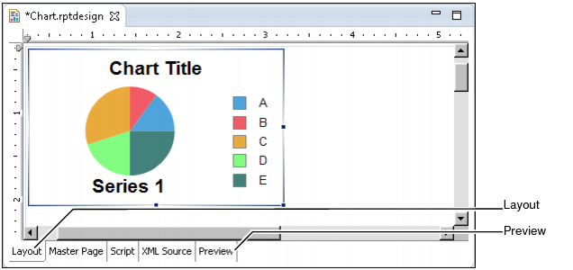
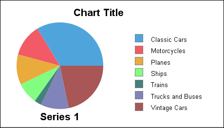

You usually need to enlarge a chart after you finish designing it in the chart builder. The size of the default pie chart cannot accommodate all the Classic Model data, so you resize the chart in the layout editor. You need to look at a preview in the report editor to ensure that the size of the chart is appropriate.



Compare the preview in Figure 13-11 with the preview in Figure 13-9.
Vintage Cars data is not visible.
The chart now uses the correct data, but the layout is not very attractive. You need to format the chart to make it visually appealing and to emphasize the points that you want. The remaining procedures in this tutorial help you to modify the chart. Some of the changes that you make include creating a new title, adjusting the data labels, and removing the legend.